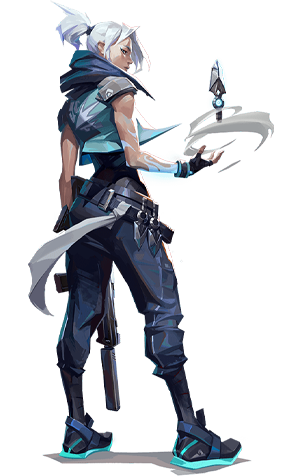
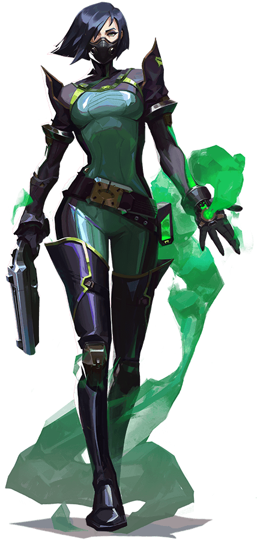

Meet The Agents!
"Duelists are self-sufficient fraggers who their team expects, through abilities and skills, to get high frags and seek out engagements first.
This class type is the most offensive choice and often ranks highly as an Attacker.
These agents will generally be at the forefront when clearing corners and attacking sites." -RankedBoost

Controller

Controllers are experts in slicing up dangerous territory to set their team up for success. This class provides lots of utility in the form of
slowing down the enemy players via Walls, Smokes that block Vision, and even Slows that can be placed on the ground.-RankedBoost
Sentinel
Sentinels are defensive experts who can lock down areas and watch flanks, both on attacker and defender rounds. This class type tends to be the best
defensive agents; these characters will either hang back or lay traps to watch your teams flank when attacking.-RankedBoost